Benedetto aclaró que no dio positivo
En las últimas horas el Olympique de Marsella aclaró que había cuatro casos positivos en su plantel.Debido a eso, la Ligue 1 decidió postergar el partido del viernes, en el reinicio del fútbol francés contra el Saint-Etienne como prevención.Y Darío Benedetto, uno de los argentinos del plantel junto a Leonardo Balerdi, quiso aclarar que no dio positivo.
'Quería informarles que no tengo Covid-19, no sé de dónde sacaron esa información pero gracias a dios yo y mi familia nunca dimos positivos en ningún test.Estamos tomando las precauciones necesarias y haciéndonos constantemente el test ya que todavía seguimos expuestos ante este virus.Saludos a todos y cuídense mucho!!!', fueron las palabras del Pipa mediante una historia en su cuenta de Instagram.
Si bien todavía no se dieron a conocer los nombres oficialmente, en la prensa francesa se especula que serían Steve Mandanda, Maxime Lopez, Valentin Rongier y Jordan Amavi.Y ante esta situación la LFP (Liga de Fútbol Profesional) decidió aplicar el protocolo que ante cuatro o más casos un partido se puede postergar, y así lo hicieron con el del viernes ante el Saint-Etienne que iba a dar inicio a la temporada 2020/21.
El Pipa y todo el OM ya llevan un mes y medio de pretemporada, en la que disputaron seis partidos y Benedetto convirtió un gol.Una preparación para una temporada decididos a darle pelea al PSG en la Ligue 1 y también marcando el regreso a la Champions League.Por ahora, los goles del ex Boca deberán esperar un poco más.Por lo menos, ya aclaró que no dio positivo.
Posted On: 2020-08-18T15:49:00
Posted By: Olé
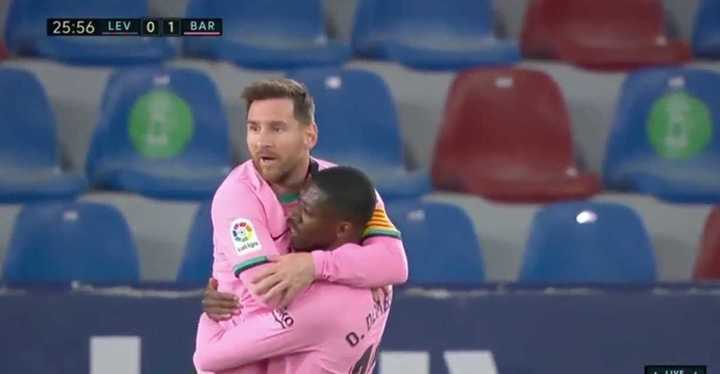
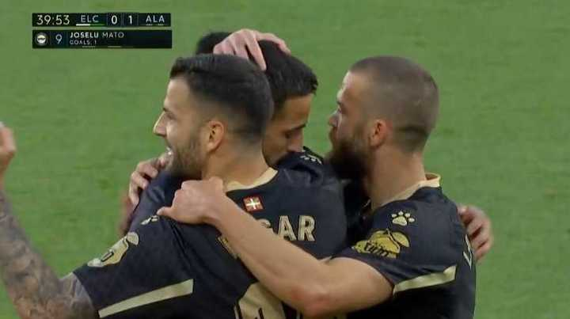
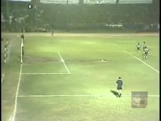
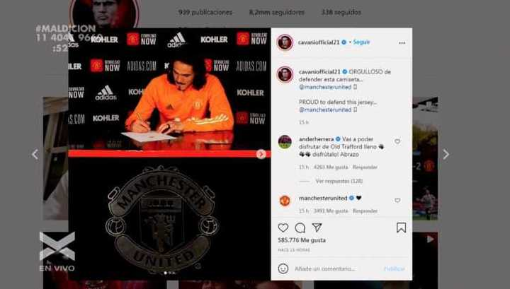
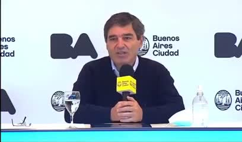
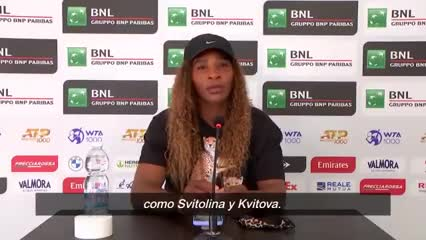
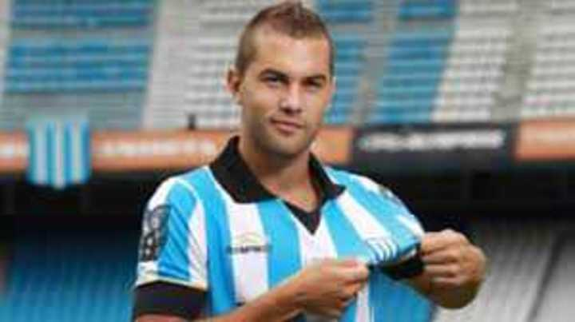
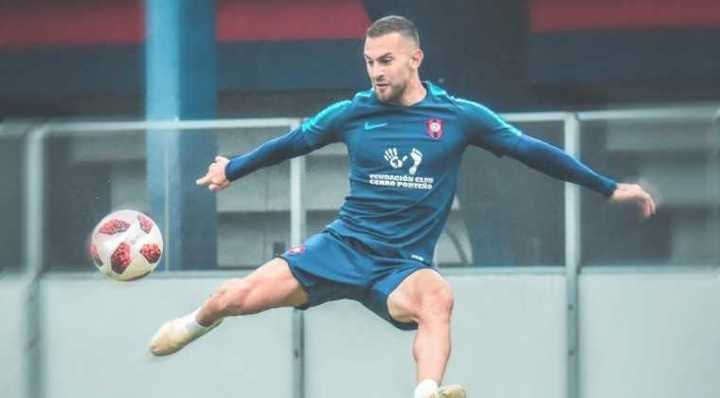
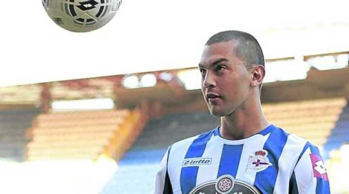
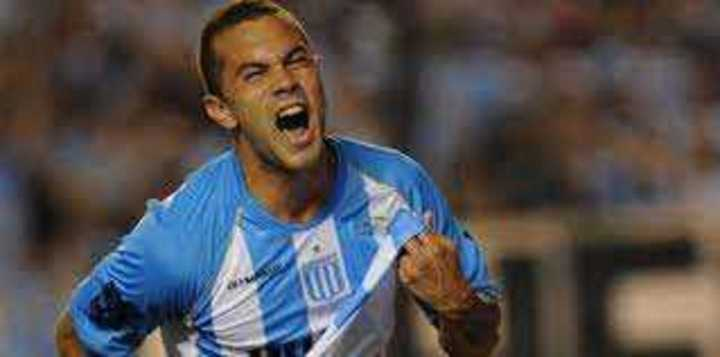
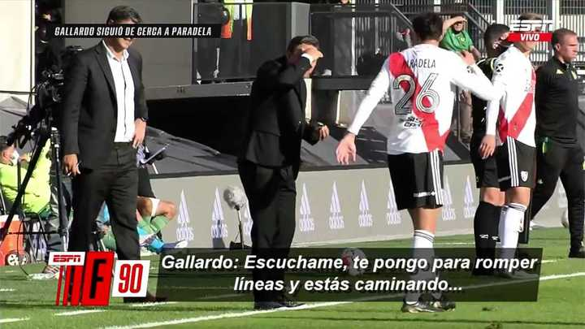
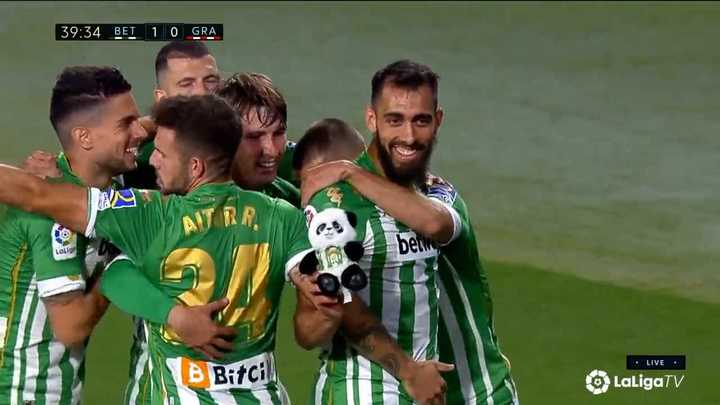
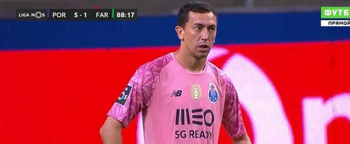
Content Date: 2020-08-18
Download Date: 2021-05-13
Document ID: L0C04C9HA